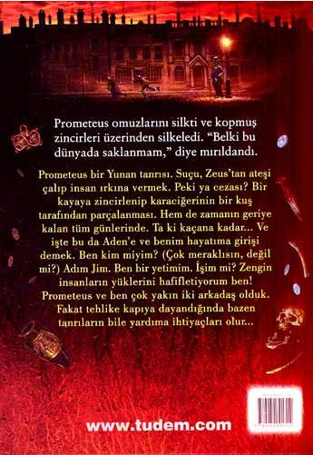
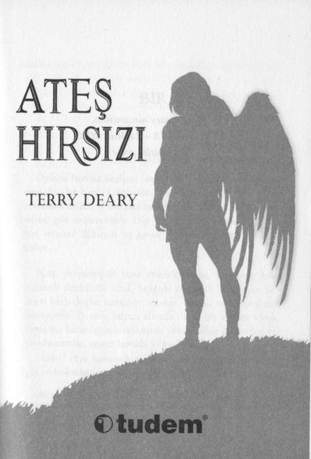

© 2006, Tudem . Cumhuriyet Bulvan N o : 302/501 35220 Alsancok - İZMİR
metin haklan © 2006, Terry Deary
İlk basım 2006 yılında, İngiltere'de "The Fire Thief' adı ile Kingfısher Publications Plc tarafından gerçekleştirilmiştir.
Yazar: Teny Deary
Türkçeleştiren: Niran Elçi
Kapak: David Wyatt
Yayın Yönetmeni: İlke Aykanat Ç a m
Editör: Rukiye Düzçay
Düzelti: Perçem U. Yıldızbaş
Dizgi - Grafik: Tudem
Baskı: Ertem Matbaa • 0 312 284 18 14
Birinci Basım: Haziran 2007 (3000 adet)
İkinci Basım: Nisan 2008 (3000 adet)
Üçüncü Basım: Eylül 2009 (3000 adet)
Dördüncü Basım: Nisan 2010 (3000 adet)
ISBN: 978 - 9944 - 69 - 131 - 4
T ü m haklan saklıdır.
Bu yayının hiçbir bölümü, telif hakkı sahibinin önceden yazılı izni olmaksızın tekrar üretilemez, bir erişim sisteminde tutulamaz, herhangi bir biçimde elektronik, mekanik, fotokopi, kayıt ya da diğer yollarla iletilemez.
BİR
YUNANISTAN - Z A M A N ı N ŞAFAĞı
Öyküm burada başlıyor. Ben Eski Yunan'da yaşamadım; ama bu korkunç hikâyedeki kahramanlardan biri bana öyküsünü anlattı ve ben ona inandım. Bu öyküyü, yazan ben-mişim gibi anlatacağım. Hep yazar olmak istemiştim. Ben kim miyim? Bekleyin ve görün. Zamanın şafağıyla başlayalım...1
Kuş, yeryüzünün ıssız yüksekliğinde, bulutsuz gökyüzünde süzülerek uçtu. Aşağıda yemyeşil vadiler ve zirveleri karlı dağlar uzanıyor; uzakta, berrak mavi bir deniz ışıldıyordu. Devasa kuşun altında derin bir orman vardı.
Ormanın karanlığının ortasında yanan odun ateşinden çıkan dumanlar, temiz havada yükseliyordu.
"Ahh!" diye homurdandı kuş. "Ateş." İsli havayı kokladı ve kokudan uzaklaşmak için yükseldi. Sonra dönerek 1 Peki, t a m a m , belki t a m olarak z a m a n ı n şafağı değildi. İlk g ü n ü n ilk saati değildi. Ama bir m i l y o n sene ö n c e , i n s a n l a r ı n çok zeki m a y m u n l a r d a n biraz d a h a ileri o l d u ğ u z a m a n l a r d ı . Bazı insanlar hâlâ aynı d u r u m d a . Ama biz artık onlara polis m e m u r u diyoruz. H e h ! H e h !
6
uzaktaki dağa doğru ok gibi uçtu. "Kahvaltı," diye tısladı ve dalışa geçti. Kuşun, ölüm anlamına gelen gölgesi üstlerinden geçerken tavşanlar, yerlerinde dondular. Kuş onları görmezden geldi ve ılık havanın onu dağın yamacına kadar kaldırmasına izin verdi.
Kuş yükselirken, aşağıdaki ışıl ışıl çimenlerin yerini rüzgârın süpürdüğü gri çalılar aldı. Sonra, üzerinde yosunların bile büyüyemediği korunaksız, çıplak kayalar...
Kuş, çengel gagasını kaldırdı ve kıvrık kanatlarını biraz katlayarak dev bir kayaya doğru dalışa geçti. Kayanın üzerinde bir adam yatıyordu. Rüzgârla kavrulmuş, güneşle pişmiş bir adamdı. Kuş, ancak pençeleri kayaya çarpınca durabildi. O sırada adam, yattığı yerden kımıldamamıştı bile. " T ü h ! " diye gakladı kuş. "Bunca zaman sonra, iniş
k o n u s u n d a hâlâ başarılı değilim."
Adamın el ve ayak bileklerine ince zincirler dolanmış, zincirlerin uçları kayalara çakılmıştı. İnce, ama kırılmaz zincirler...
Kuş, altın ışıltılı kahverengi tüylerini silkeledi. Kara gözleri çakmak çakmaktı. "Günaydın Prometeus. Umarım iyi uyumuşsundur," dedi isteksizce.
Adam gülümsedi. Yüzü bir t a n r ı n ı n k i kadar yakışıklıydı. "Çok iyi u y u d u m . " 2
2 Karakterlerimiz aslında Eski Yunanca k o n u ş u y o r d u . Ama sen Eski Yunanca anlayamazsın; bu y ü z d e n b e n b i z i m dilimize çevirdim. Bak, sana çok iyi d a v r a n ı y o r u m , bu y ü z d e n gerçekçilik h a k k ı n d a sızlanmayı bırak da öyküm ü z e d e v a m edelim. G ü v e n b a n a , b e n bir yalancıyım.
7
Kuş, gözlerini kırpıştırdı. "Neşeli gibisin," diye terslendi kuşkuyla.
"iyi uyudum," diye haykırdı adam, "ve harika düşler gördüm! Özgürlük düşleri..."
"Bunu hak etmiyorsun," diye h o m u r d a n d ı kuş. "Sen tanrılardan ateşi çaldın ve onu, insan denilen şu sürüngen yaratıklara verdin. Ateşi bir sazın içine saklayıp gizlice uzaklaştın; yol kesip soygun yapan haydutlardan hiç farkın yok." Kuş bağırmaya ve tüylerini kabartmaya başladı.
"İnsanlar dünyamızı yakacak ve bizi d u m a n a boğacak! Sen ölümden beterini hak ediyorsun! Ateş Hırsızı!.."
Prometeus yine gülümsedi. "Aldığım ceza da ölümden beter, öyle değil mi? Kuzenim Zeus beni buraya zincirledi.
Güneş ve kar, rüzgâr ve dolu altında, daima acı çekmem ve asla ölmemem için."
Kuşun zalim gagasının kenarından büyük, gri bir dil çıktı. Kuş yalandı. "Ölümden de beter Prometeus, ölümden de beter! Senin cezan, benim! Gazap!.. Tanrıların Büyük İntikamcısı." Kuşun nefesi sıklaştı. "Şimdi ne yapacağım Prometeus?"
Prometeus m a s u m bir bebek gibi, gözlerini iri iri açtı.
"Bilmiyorum! İki yüz yıldır her gün ne yapıyorsun Gazap... Minik gaganı kullanarak yan tarafımı gagalıyorsun ve karaciğerimi alıyorsun. İki yüz yıldır, her sabah beni öldürüyorsun. Her gece dinliyorum ki bir sonraki şafakta yine acı çekebileyim."
8
"Ben gagalamam!" diye h o m u r d a n d ı kuş. "Ben parçalarım."
"Bana gagalama gibi geldi," dedi Prometeus, başını hüzünle iki yana sallayarak.
Gazap öfkelendi: "Ben senin karaciğerini almıyorum; ben onu senin v ü c u d u n d a n söküyorum."
"Bana azıcık çekiştiriyormuşsun gibi geldi." diyerek omuzlarını silkti adam. Zincirler kayaya çarparak şıngırdadı.
Kuş, ayağını öfkeyle kayaya vurduğunda pençeleri takırdadı. "Keşke Zeus senin yalancı dilini kopartmama ve alaycı gözlerini oymama izin verseydi!" diye ciyakladı.
"Üzgünüm, yalnızca küçük ihtiyar karaciğerimi alabilirsin." diye içini çekti adam. "Yakına gel Gazap."
Kuş yerinde d o n d u . "Ne?"
"Sana d ü ş ü m ü anlatmak istiyorum."
"Neden senin d ü ş ü n ü dinlemek isteyeyim ki? Ben senin v ü c u d u n u parçalayıp deştikten sonra ölü düşleri görüyor olacaksın."
"Ah, ne düştü ama! Ancak iki yüz yılda bir görebileceğin türden bir düş." diye mırıldandı adam.
Kuş yavaşça yanaştı. Gagasını keskinleştirmek için soğuk kayaya sürttü. "Başını kaldır Prometeus!" diye haykırdı.
"Vadiye bir bak. Aşağıdaki şu duman, bu sabah beni boğuyordu neredeyse, insan denen o zavallı hayvanlara SENİN
verdiğin ateşten yükselen d u m a n . Bu sabah karaciğerin daha da tatlı gelecek."
9
Kuş, adamın yan tarafına saldırdı. Prometeus'un eli zincirden kayıp kurtuldu ve kuşu boğazından yakaladı. Kuş
şaşkın şaşkın gakladı. Kara gözleri iri iri açıldı, bedeni çabaladı. Ama bedeni ne kadar kıvranırsa, boynu o kadar acıyordu.
"Sana d ü ş ü m ü anlatmayı bitirmedim," dedi adam. Kavrayışı ne kadar sertse sesi de o kadar yumuşaktı. "Düşümde, arkadaşım Herkül dağa tırmandı. O, dünyadaki en güçlü yaratıktır. Benden de güçlü," diye içini çekti Prometeus ve tüylü boynu biraz daha sıktı. "Senden de güçlü. Sonra Herkül, zincirlerimi, ottan yapılmışlar gibi koparıverdi. Tıpkı benim şimdi senin b o y n u n u koparacağım gibi."
Kuş kıvrandı ve gakladı. "Düş olduğunu söylemiştin."
"Yalan söyledim," dedi Prometeus, kahkaha atarak.
"Hâlâ bazı dostlarım var." Yine sıktı. "Herkül gibi güçlü dostlar. Bana haksızlık yapıldığını d ü ş ü n e n iyi dostlar.
D ü n gece beni kurtarması için Herkül'ü gönderen dostlar..."
"Düş demiştin!"
"Gerçekleşen bir düş."
"Zeus, kaçmana asla izin vermeyecek. Bu yeryüzünde nereye saklanırsan saklan, o seni bulacak."
Prometeus omuzlarını silkti ve k o p m u ş zincirleri üzerinden silkeledi. "Belki bu dünyada saklanmam," diye mırıldandı. Sertçe sıktı. Kırık kemiklerin çatırtısı ve hafif bir nefes sesi duyuldu. Canavar k u ş u n gevşeyen bedenini 10
tiksintiyle fırlatıp attı. Kuşun soğuk kayalara çarpan zalim gagasının ve kıvrık pençelerinin sesi yankılandı.3
Prometeus doğruldu ve gerindi. Dünya ayaklarının altında uzanıyordu. Dağın yamacından inmeye başladı. İki yüz yıldır zincire vurulu yaşadığından, bacakları tutulmuştu.
Birinin onu izlediğini hissetti. D ö n ü p arkasına baktı.
Canavar k u ş u n gözleri ölü ve d o n u k t u .
Sabah güneşine karşı gözlerini kıstığı zaman, k u ş u n üzerinden bir gölge geçtiğini gördü. U z u n boyunlu bir k u ş u n gölgesi. Bir k u ğ u n u n gölgesi...
Genç adam bir anlığına gözlerini kapattı ve inledi.
"Zeus," dedi dişlerinin arasından. "Zeus!.." Saklanacak yer aradı ama korunaksız, çıplak dağda saklanacak yer yoktu.
3 Bak, bu canavar kuş için ağlamaya, iç çekmeye falan kalkışma lütfen! Ve hayvanlara işkence etmek konusunda şikâyet mektupları da yazma. Her şeyden önce, bu bir intikam şeytanıydı; banyoda karşılaşmak isteyeceğin türden bir şey değil, inan bana. Yalnızca, kuş biçimine bürünmüştü. Hem, sonra ne olduğunu bilmiyorsun. Bekle ve gör.
İKİ
A D E N - BIZIM 1 8 5 8 DEDIĞIMIZ YIL
Şimdi öykü benim çocukluğuma dönüyor. Bu kısım ger
çekten oldu. Biliyorum, çünkü ben de oradaydım, değil mi?
Bu, bir milyon senelik sıçrayış kafanı karıştırdıysa gerçekten çok küçük bir beynin olmalı. Bu durumda, okumayı bırak ve örgüye ya da çomak yontmaya başla. Eğer kafan o kadar kolay KARIŞMIYORSA okumaya devam et. Ee, ne bekliyorsun? OKUSANA.
E d w a r d A m c a ' n ı n öldüğü haftayı asla unutmayacağım.
Eh, dürüst olmak gerekirse, Edward Amca'nın iki kez öldü.
Bu tuhaftı, çünkü çoğu hafta yalnızca bir kez ölürdü.
O gece, ilk ölüşünde biraz güçlük çekti ve suçu, benim üzerime attı. Hep öyle yapardı!
Aden'e gelmiştik. Dünyadaki en karanlık, en rutubetli, en kasvetli şehre... Aynı zamanda, en kötü ve en dikkatli şehirdi.
Dolambaçlı sokaklar, yabancıların kaybolması için yapılmış gibiydi. Sanki şehir kaybolmanızı istiyordu. Geniş
12
bir yol, sizi bu tarafa gitmeye teşvik ediyordu. Ama o tarafa gittiğinizde yol kıvrılıyor, dönüyor; sizi, geçit vermeyen geniş tahta bir duvarla yüz yüze getiriyordu. Geri döndü
ğünüz zaman iki d ö n ü ş yolu ile karşı karşıya kalıyordunuz. Hangisini seçerseniz seçin, yanlış yol çıkıyordu. Sonra, bir başka geniş duvara rastladığınızda hafif bir kıkırdama duyuyordunuz. Dönüyordunuz, kimseyi göremiyor-dunuz. Size gülen, sinsi şehrin kendisiydi.
İstasyondan ayrılırken b u n u bilmiyorduk. Bir kibritçi kıza sorduk:
"Storm Hanı'na nasıl gidebiliriz?"
Kız, buz kesmiş parmağını puslu sokağa doğru uzattı:
"Kavşağa kadar d ü m d ü z gidin, sonra sola, ırmağa doğru d ö n ü n . "
Ama Aden'de 'dümdüz gitmek' yoktur, yalnızca dolaşık sokaklar vardır. G ü n ışığını asla görmeyen, kasvetli arka sokaklar... Senin gitmek istediğin yöne gidiyormuş gibi görünen; ama seni birinin avlusuna, eşelenen tavukların ve korkudan donakalmış köpeklerin, ayaklarına dolandığı bir yere götüren dar yollar...
Aden, sizi içine çeken şekilsiz bir bataklık gibiydi. Harita ressamlarını deli etmiş olmalıydı. Bazı binalar sağlam taştan, bazıları d u m a n d a n kararmış tuğladandı; bir çoğu ise, dingildek ahşaptan inşa edilmişti ve tepeleri p u s u n içinde kayboluyordu; ama hepsinin, kör gözler gibi bakan pencereleri vardı.
13
Sokaktaki insanlar, pencereler kadar boş ve kaldırım taşları kadar sert yüzlerle geçip gidiyorlardı.
Kâbuslarınızı gerçekleştirmek isterseniz Aden'e gidebilirdiniz. O zaman Edward Amca sizi oraya neden götürdü, diye mi soruyorsunuz?
Yanıt şu: Ç ü n k ü orada kimse bizi tanımıyordu. Kim olduğumuzu bilseler bizi ya hapsederler ya da kovarlardı; hatta daha kötüsünü yaparlardı.
Irmaktan yayılan fare k o k u s u n u aldık ve o tarafa döndük. Aniden Storm Hanı karşımıza çıktı. Yine o yumuşak kıkırdamayı duyduk. Aden, tıpkı fareyle oynayan zalim bir kedi gibi, bize yeterince işkence etmişti. Şimdi bizi salıvermiş, tam da aradığımız kapının ö n ü n e bırakmıştı.
"Buna kader derler oğlum," dedi Edward Amca. "Bu huzurlu oteli bulacağımız kesindi." Ama kader değildi.
Aden bizi salıvermişti; çünkü bizi daha k ö t ü s ü n ü n beklediğini biliyordu.
"Burası otelden çok d o m u z ağılına benziyor." diye mırıldandım. Buna rağmen içeri girdik ve bir oda tuttuk.
Bavullarımızı ve tabutumuzu bıraktık. Uyurken bize hamamböcekleri eşlik etti.
Ertesi gün öğleden sonra, şehrin en zengin evine yollandık. Bu sefer, kaldırım taşlarının üzerinde tıkırdaya tıkırdaya ilerleyen bir araba tuttuk. Araba bizi salladı, silkeledi. Arabayı çeken at, ağır ağır süzülen sislerin içinde 14
yolunu bulmayı bir şekilde başardı. Yalnızca iki kez kayboldu. Sessiz, asık suratlı arabacıya parasını ödedik. Adam suratını asıyordu, çünkü Edward Amca ona bahşiş vermemişti. Edward Amca asla bahşiş vermezdi.
Caddeden eve kavisli bir yol uzanıyordu. Evin, ahır kapısı kadar geniş kapısına taştan basamaklarla çıkılıyordu. Pirinç kapı tokmağı kafam kadar vardı... Tabi o günlerde kafam pek büyük değildi.
Edward Amca, solmuş siyah ceketine yapışmış akşam sisini silkeledi ve sarı kravatını düzeltti. Yıpranmış ayakkabılarını gri, kareli pantolonuna sildi. Artık hazırdı.
Kapıyı çaldı.
"Biz gezgin oyuncularız," dedi kapıyı açan kâhyaya.
"Küçük gösterimizle insanları eğlendiririz."
Kâhya buzdan oyulmuştu sanki. "Storm Hanı'na gidin.
Sizin gibi avarelerin gösteri yapmasına izin veriyorlar."
dedi ve yemin ederim, dilinden buzdan sarkıtlar dökülüyordu.
Edward Amca, gösterişli bir hareketle cebinden bir parşömen rulosu çıkardı. Amcam her şeyi gösterişle yapardı. Parşömeni açtı -gösterişli bir hareketle elbette- ve yine gösterişli bir hareketle kâhyanın bıçak kadar keskin b u r n u n u n dibine gösterişle uzattı.4
4 Bak, bu gösteriş meselesini bırakabilir miyim? Anlamışsındır artık. Ne zaman Edward Amca bir şey yapsa sen kendiliğinden, gösterişli olduğunu düşün. Sen benim için bu küçücük iyiliği yaparsan öyküye devam edeceğim.
15
"Bu, zarif şehrin belediye başkanından," dedi Edward Amca. "Belediye başkanı benim çok eski dostumdur. Onunla aynı okula gittik." Kâhya mektuba uzanırken Edward Amca gösterişli bir hareketle5 mektubu kaçırdı. "Şöyle diyor.
Boğazını temizledi ve yazıları okudu:
"Bu mektubu iyi dostum Bay Edward Slaughter'ı takdim etmek için yazdım. Kendisi bir aktör, müzisyen ve dünyanın en büyük sahnelerinin yıldızıdır. Bu olağanüstü adam, Amca' adlı başyapıtı ile dostlarınızı ve konuklarınızı h e m eğlendirecek h e m eğitecektir. Dahası, bu hayranlık uyandırıcı sanat karşılığında bir ücret talep etmemektedir (Bay Slaughter'ın, yaşamlarına bir zenginlik kattığını hissederlerse konuklarınız onu ödüllendirmekte serbesttir).
Saygıdeğer belediye başkanı."
Edward Amca eğilerek selam verdi.
"Yalan söylüyorsun. Adı nedir?" dedi siyah takım elbiseli kâhya, havlarcasına.
"Kimin adı?"
"Belediye başkanının elbette, adı nedir?"
"Niye... Belediye başkanı. Ben ona her zaman Bay Belediye Başkanı derim."
Kâhya başını iki yana salladı. Yemin ederim boyun kemiklerinin gıcırdadığını duydum. "Onunla aynı okula gitmişsin."
5 Tüh! Pardon!
16
"Gitmişim mi?"
"Kendin söyledin."
"Ah, evet, çocukluğumuz birlikte geçti, en azından benim çocukluğum," dedi Edward Amca gülerek.
"Ee, okulda ona nasıl hitap ediyordun?" diye hırladı kâhya.
"Hangi okulda?" diye yanıt verdi Edward Amca.
"Ne demek hangi okulda? Belediye başkanıyla birlikte gittiğiniz okulda tabi ki. Hangi okuldu o?"
"Sen bilmiyor musun?" diye sordu Edward Amca hayretle.
"Yoo..."
"Ee? Onunla aynı okula gitmediğimi nereden biliyorsun?"
" Ç ü n k ü adını bilmiyorsun!"
"Sen de bilmiyorsun." dedi Edward Amca gülümseyerek.
"Ben biliyorum!" diye hırladı kâhya ve hayalet beyazı yanakları öfkeden pençe pençe kızardı.
"Bilmiyorsun!"
"Biliyorum!"
"Ee, ne o zaman?"
"Belediye Başkanı Walter Tweed!" dedi kâhya. Gülüm-seyecek gibi oldu.
"Bravo!" dedi amcam. "Küçük Wally'nin ismini GER
ÇEKTEN biliyormuşsun."
"Ona Wally diyorsun." Taş suratlı kâhyanın taştan suratı şokla çatladı.
17
"Okuldayken ona Wally derdik," diye güldü amcam.
"Tabi, tabi..." dedi kâhya inanmayarak.
"Bizi buraya bizim Wal gönderdi. Efendinin bizi görmekten m e m n u n olacağını söyledi. Her cuma gecesi parti veriyor ya!"
"Evet, veriyor," diyerek başını salladı kâhya. "Bütün zenginler cuma geceleri parti verir."
Edward Amca, en üstteki basamağa sıçradı. "Sen GER
ÇEKTEN o n u n kâhyasısın, değil mi?"
"Elbette..." Kâhyanın çatık kaşlı, taştan suratında şaşkınlık vardı, hatta adam sarsılmıştı.
"Ee? Adı nedir?"
"Adı mı?"
"Efendinin adı!" dedi amcam tatlı tatlı.
"Mucklethrift... Bay George Mucklethrift," diye geveledi kâhya.
"Doğru!" diye bağırdı amcam. Bana döndü. Ben ince tabanlı ayakkabılarımın içinde; en alt basamakta durmuş, titremekle meşguldüm. Sanki ayakkabılarımın tabanı kâğıttandı. Kollarım ve bacaklarım çöp gibi inceydi. "Jim!" dedi.6
"Jim, karşımızda dürüst bir adam duruyor. Bugünlerde 6 Bana Jim derdi. Gerçek ismim de olabilir, bilemiyorum. Daha altı yaşındayken beni bir yetimhaneden almıştı. Yetimhanedeki adım altı—dört—iki'ydi-Edward Amca bana Jim derdi. Ben de ona amca derdim, amcam olmamasına rağmen. Umarım buraya kadar anlamışsındır. Anladın mı? Şimdi okumaya devam et. Basamakta titreyip duruyorum, bu yüzden acele etsen iyi olur.
18
dürüst adam zor bulunur." Kâhyanın yüzüne baktı. "En son ne zaman dürüst bir adam gördüm, biliyor m u s u n ? "
diye sordu yumuşak bir sesle.
"Yoo!"
"Aynaya baktığımda," diye yalan söyledi Edward Amca.
"Artık içeri girelim de eve bir bakalım."
"Eve mi?" diye inledi kâhya.
"Evet n'olmuş ki? Eve bir bakmamız lazım." Amcam omuzlarını öyle silkti ki omuzları oynadı.
"Sen bir yabancısın," dedi kapının koruyucusu.
Edward Amca kendini en üst basamağa çekti. "İki dakika öncesine kadar sen de benim için bir yabancıydın. Ama ben sana güveniyorum, değil mi?"
"Öyledir herhalde."
"O zaman, yeni dostluğumuza birazcık güvenle başlayalım. Oturma odanızı görmemiz gerek; bu gece gösterimizi yapacağımız odayı."
Kâhya istemeyerek: "İçeri girin Bay Slaughter," dedi.
"Bana Edward diyebilirsin," dedi amcam. Kolunu uzatarak kâhyayı kapıya, içerinin sıcaklığına ve altın rengi ışı
ğına yönlendirdi. Bir eliyle de bana, izlememi işaret etti.
Sisten parmaklar, şehrin, göz altında tutulmamızı sağlayan casuslarıymış gibi takip etti bizi.
İşimi biliyordum. O ikisi oturma odasına bakarken ben evde keşfe çıkacak, servet arayacaktım.
19
Ne de olsa biz oraya, gösteri yapmak ve zenginlerden birkaç zavallı kuruş toplamak için gitmemiştik. Ah, hayır.
Biz oraya bambaşka bir amaç için gitmiştik...7
7 Bir yazarın öyküsüne, tam da heyecanlı olmaya başlamışken ara vermesi gerçekten sinir bozucu olabiliyor. Aslında ışıkları söndürüp uyuman gerekirken, okumaya devam etmene yol açıyor. Yazarların bunu yapması yasaklanmalı. Ama yazarlar yine de bunu YAPAR. Ben de yazar olmak istiyorum, bu yüzden ben de yapıyorum. Dilersen şikâyet et. Bu BENİM öyküm ve onu tam bir yazar gibi anlatacağım.
Affedersin... bunu neden söyledim ki? Gerçekten özür dilerim.
Üç
YUNANISTAN - ZAMANIN ŞAFAĞı
(AMA BEŞ DAKIKA SONRA)
Hatırlarsın, Prometeus'u -benim zamanımdan bir milyon sene önce- dağdan aşağı yürürken bırakmıştık. Sonunda özgür kalmıştı. Aynı zamanda, oradan geçmekte olan bir kuğunun Prometeus'u gördüğünü de hatırlarsın. Prometeus o kuğunun, Zeus'un kılık değiştirmiş hali olduğunu biliyordu.
Sonra, tam sen şimdi ne olacağını merak ederken, Prometeus'
un öyküsünü bir kenara bırakıp kendi öykümü anlatmaya başlamıştım. Daha fazla meraklanmana gerek yok. Sonra şunlar oldu...
K u ğ u alçaldı ve Prometeus'un ö n ü n e k o n d u . Genç adamın omuzlarının nasıl çöktüğüne bakarak kuğuyu görünce nasıl canının sıkıldığını anlayabilirdin. 'Bozgun' ifade eden bir g ö r ü n t ü y d ü . 8
8 Ki bu, "bozkun" ya da "bosgun", hatta "boskun" ifade eden bir görüntüden daha iyidir. İllaki bir şey ifade eden bir görüntün olacaksa en azından doğru yazıldığından emin ol. Yannış yazılmış bir görüntüden daha kötüsü yoktur.
21
Genç adam iki yüz yılını o kayaya zincirli olarak geçirmişti.9 Her sabah karaciğeri vücudundan sökülmüştü. Ama o gülümsemiş, hatta o k o r k u n ç acıya gülmüştü. Ama şimdi çaresizlik içindeydi. "Selam k u z e n ! " diye içini çekti.
Kuğu, gün ışığında ışıldıyordu. Tüylerin altında Tanrı Zeus'un şeklini görebiliyordun. "Selam Prometeus? Bir yere mi gidiyorsun?"
Genç adam, karaciğerini kaybederkenki gülümsemesini takınmaya çalıştı. "Yalnızca küçük bir yürüyüşe çıkmıştım."
"Ah..." Zeus başını salladı ve kuğu kanatlarından sıyrıldı. "Ben yürümekten nefret ederim. Nefret! Ben uçmayı tercih ediyorum."
Prometeus acı acı baktı ona. "Bu sabah bu dağın üzerinde uçuyor olman ve beni yakalaman yazık oldu," dedi usulca. Aslında, o kadar alçak sesle konuşmuştu ki tanrı ile kuzeninin yanından geçip giden kelebeğin kanat seslerini duyabilirdin.
Zeus, başını iki yana salladı. "Anlamıyorsun Teus. İntikamcı'yı, Gazap'ı öldürdüğün zaman, iz bırakmadan ölüp gitmedi. Gökyüzüne, bana öldüğünü anlatan bir kıvılcım yolladı. Biz tanrılar ölebiliriz; ama parlak bir kıvılcım çıkarmadan gitmeyiz. Bunu bilmiyor m u y d u n ? "
9 Evet, iki yüz senedir oraya zincirli olarak yaşamışsa, yaklaşık 220 yaşlarında olması gerektiğini biliyorum. Bu yüzden ona "genç" adam diyemeyiz.
Ama her sabah ölüyordu ve her gece yeniden doğuyordu. Bu yüzden, aslında bir günlükten daha yaşlı olmuyordu, değil mi? Ona genç adam değil, "bebek" diyebiliriz. Ha! Bu hiç aklına gelmemişti, değil mi?
22
Prometeus başını iki yana salladı. "Ben bir Titan'ım, yalnızca yarı tanrıyım," dedi. "Belki ben o güce sahip değilimdir."
"Sahipsin kuzen. Her sabah, öldüğün zaman parlak bir kıvılcım çıkarıyorsun. Ben Olimpos'ta o kıvılcımı bekliyorum, bilirsin." diye açıkladı büyük tanrı.
Teus'un yüzü şaşkınlıkla kırıştı. "Bu sabah, Gazap öldüğü zaman o ölüm kıvılcımlarından birini gördün. Ben olmadığımı nereden anladın?"
Zeus'un yüzü parlak ve güzeldi. Güneş kadar parlak ve o kadar büyüktü ki Prometeus'un b ü t ü n görüş alanını dol-duruyordu sanki. Hemen hemen insansı bir yüzdü, kendinden pek m e m n u n görünen bir insan yüzü. "Bir tanrı öldüğü zaman, altın bir kıvılcımla gider. Bir insan öldüğü zaman ise, zavallı mavi bir ışıkla."
"Ya ben?"
"Yarı yarıya, kuzen. Maviyle sarıyı birleştirdiğin zaman ne elde edersin?"
"Mor m u ? "
Zeus içini çekti. "Bir gün insan denen o zavallı yaratıklar çocukları için bir işkence türü icat edecek. Ona 'okul'
adını verecekler. Çocuklarını, sürüler halinde küçük odalara tıkacaklar ve gerçekleri öğrenmeye zorlayacaklar."
"Ne kadar zalimce!" diye haykırdı Teus. "Öğrenemez-lerse karaciğerleri sökülecek mi peki?"
23
"Daha da k ö t ü s ü ! " diye kükredi Zeus. "Onlara beş para etmez oldukları söylenecek ve kendilerini işe yaramaz hissedecekler. Başarısızlık simgesi olarak gösterilecekler.
Yaşamları boyunca arkadaşları onları küçük görecek. Onlara yeni lakaplar takılacak."
"Lakaplar mı?"
"Ahmak ve Aptal, Mankafa ve Boşkafa, Budala ve Kuş
Beyinli, Sersem ve Salak, Taşkafa ve Dangalak."10
"Can yakan sözler," diye başını salladı Teus. "Ama neden b u n u bana anlatıyorsun?"
" Ç ü n k ü sen peltebeyin Prometeus'sun, tıntın Teus'sun.
Bir gün o okul veletlerine sarı ile mavinin yeşil yaptığı öğretilecek! Keklerin en keleği bile b u n u biliyor olacak. Senin kıvılcımın yeşil. Sen yarı tanrı, yarı insansın. Altın rengiyle mavinin, yeşil yaptığını bilmiyor m u y d u n ? Belki seni kü
çük bir çocuk biçiminde geleceğe göndermeliyim. Belki seni okula göndermeliyim. Belki sınıfların zalimliğini ya-
şatmalıyım sana..." dedi Zeus sinsi sinsi.
Genç adamın gözleri irileşti. "Yo kuzen, yapma. Beni kayaya geri gönder. Bırak karaciğerim sökülsün... yüreğim, 10 Kemikkafa, Enayi, Şaban, Andaval, Etkafa, Avanak, Gerzek, Şabalak diye de ekleyebilirdi. Bunlar yetimhanede bana takılan lakaplardan yalnızca birka
çı. Bu sözcükler zorbaların dayaklarından, sinsi çimdiklerden, hatta öğretmenlerin zalim dayaklarından bile daha fazla incitir insanı. Zeus haklıydı.
Bir tanrının geleceğe bakıp okullardaki vahşeti görebilmesi gerçekten hayret verici.
24
akciğerlerim, gözlerim, dilim... günde iki kez... ama beni o okul denen yerlerden birine g ö n d e r m e . " 1 1
Zeus, yakışıklı başını bir yana eğdi. "Teus, sen düşüncesiz, aptal bir Titan'sın..."
"Aynı zamanda salak ve saftirik," diye başını salladı Teus.
"Tanrılardan ateşi çaldın ve onu insanlara verdin.
Vadiye bir bak..."
Prometeus başını çevirdi ve gri-yeşil yamaçtan aşağı, aşağıdaki ormana baktı. Bir açıklıktan kehribar rengi alevler fışkırdı ve insanlar karınca gibi koşturarak ateşlerini, parçalanmış ağaç gövdeleri ve kırık dallarla beslediler. Yükselen d u m a n bir esintiye tutuldu ve kıvrıla kıvrıla Prometeus'un b u r n u n a kadar geldi. Prometeus kokladı ve ök-sürdü.
"Bu yalnızca başlangıç," dedi Zeus. "Bir gün dünya onların alevleriyle dolacak, dumanlarıyla boğulacak. Hava o dumanlarla zehirleneceğinden kuşlar, gökyüzünden düşecek. Yeryüzü sisten bir battaniye ile kaplanacak, o battaniye, sıcağı yeryüzünde tutacak ve en buzlu kıraçları eritecek.
Eski dünya sele kapılıp boğulacak. Bütün bunlar senin suçun Teus. Neden onlara ateşi verdin?"
11 Elbette, hepimiz hiç bilmediğimiz şeylerden korkarız. Muhtemelen sen de benim gibisindir ve yatağının altında yaşayan öcülerden korkuyorsundur.
Öcüler korkutucudur; çünkü hiç öcü görmemişsindir. Yalnızca, senin öcünün orada olduğunu bilirsin. Teus da okuldan korkuyordu; çünkü hiç okul görmemişti. Zeus, okulları, korkunç yerlermiş gibi anlattı. Sen okul gördün. Sen gerçeği biliyorsun -hiç de korkunç değillerdir- onlar korkunçtan çok, çok daha beterdir!..
25
Teus ellerini açtı. "Onlar çok akıllı yaratıklar, onları seviyorum. Titanlar, tanrılar ve insanlar, hepimiz kadim yıldızların tozundan oluştuk. Hepimiz kuzeniz."
"Ben insanların kuzenim olmasını istemiyorum," dedi Zeus, hoşnutsuz bir sesle.
"Tanrılar hayvanlara kürk, kuşlara tüy verdi. Ama insanları tamamlamadan bıraktı. Bu yüzden zavallı, tüysüz şeyler soğuk mağaralarda büzülmek zorunda kalıyor. Ateşi onlara ısınsınlar diye verdim."
Zeus kaşlarını çattı ve başının üzerinde bir fırtına bulutu gürledi. Bulut gittikçe büyüdü, grileşti ve sonunda güneşi kapattı. Bir şimşek çaktı, buluttan yağmur yağmaya başladı. Yağmur, insanların vadideki ateşini söndürdü. Kömürleşmiş odunlar cızırdadı, buhar yükseldi, havada gökku
şakları oluşturdu. Zeus kükredi ve yeryüzü sarsıldı. İnsanlar kaçıp ormana saklandı. "Tanrılar kahramandır!" diye haykırdı Zeus. "Biz yüce varlıklarız. Dünyaya biz h ü k m e deriz! Bu insanlar haşarattan başka bir şey değil. Onlara sıkıntı vermek için yeryüzüne saçtığımız sıçanlar, yılanlar ve çekirgelerden de beterler."
"İnsanlar da kahraman olabilir," diye itiraz etti Prometeus.
Zeus gözlerini kırpıştırdı. Bulut açılmaya başladı ve güneş parladı yine. "İnsanlar kahraman olamaz. Zamanın sonuna dek arasan bile, bana tek bir insan kahraman bulamazsın," dedi tanrı tükürürcesine.
"Bana bir fırsat tanı," dedi Teus.
26
Zeus kahkaha attı. "Fırsat mı? iddiaya mı girmek istiyorsun? Bu, hoşuma gider kuzen. Birazcık eğleniriz. Olimpos'
ta yaşam sıkıcı olabiliyor, biliyor musun. Sana dileğini bah
şedebilirim... Sana bir fırsat tanıyabilirim."
Tanrı kahkaha attı ve aşağıdaki vadide yaşayan mütevazı insanlar titrediler. Kahkaha, onların kulağına insan yiyen dev bir canavarın uluması gibi gelmişti. O canavarın kahvaltısı olmaktan korkuyorlardı.
DÖRT
A D E N - YINE 1858, AYNI AKŞAM
Tam Prometeus, Zeus'u, kendisini tekrar zincire vurmaması konusunda ikna ettiğinde, Edward Amca da kâhyayı, Bay George Mucklethrift'in evine girmemize izin vermesi konusunda ikna etmişti. Bir sebepten, adama George Muckletwit*
demek geliyor içimden. Bu kaba bir davranış olurdu. Bir sahtekâr, hırsız ve yalancı olabilirim; ama genelde oldukça nazik biriyimdir. Gerçekten öyleyim. Bana itiraz etme, seni hamur surat!
A d e n ' i n karanlık, rutubetli sokaklarından sonra, Bay Mucklethrift'in evi o kadar sıcak ve aydınlıktı ki Alaaddin'
in mağarasına girmişim gibi hissettim. Kâhya yıpranmış
ayakkabılarımı çıkarttırdı ve kapının h e m e n ö n ü n d e durmamı söyledi. Sonra Edward Amca'yı oturma odasına gö-
türdü.
* muckle: çok, büyük twit: saf, aptal Çok tutumlu, cimri, varyemez anlamlarına gelebilecek "mucklethrift" sözcüğünden, ses çağrışımlarıyla "bön, salak" anlamı düşündürülmek isteniyor.
[E. N.]
28
Edward Amca, o odayı santim santim inceleyecek; oturma düzenini ve aydınlatmayı ayarlayacak; piyanoya, hatta piyano taburesine bakacaktı. Bu, on dakikasını alacaktı.
Ne daha fazla ne daha az.
Koridorda yüksek ayaklı bir saat tıkırdıyordu. Saat beşi çaldığında yerimden sıçradım. Tam beşi on geçe, çalına-bilecek en iyi şeylerin listesi ile oraya geri d ö n m ü ş olmalıydım. Büyük şeyler değil; bir sürü küçük, ama değerli şey. Bir tabuta sığdırabileceğimiz kadar çok şey.12
Koridordaki masalarda, söküp rulo yapabileceğimiz süsler ve resimler vardı. Ama resimlerin hepsi fazla yeniydi.
Bay George Mucklethrift köklü bir aileden gelmiyordu. Parasını kendi kazanmıştı.
Resimlerin en büyüğünde, d ü d ü k gibi bir takım elbise içinde yünlü bir adam betimleniyordu. Yoksa yünlü ceket içinde d ü d ü k gibi bir adam mı demeliydim? Her neyse, resimdeki adamın sıska boynunda kalın, altın bir zincir vardı. Bay Mucklethrift, Belediye Başkanı Walter Tweed'in resmini koridoruna asmıştı. Amma da acayip. Belediye başkanının buraya k o n u k olduğunu tahmin ettim. Belki bu akşam gelirdi. Ama d u r u p resimlere bakmak için zamanım yoktu. Hele değerli resimler değillerse hiç.
12 Evet, söylediğimin tuhaf olduğunun farkındayım. Neden bir tabut? Neden bir çuval ya da bavul, cep ya da kese, kocaman kahverengi bir kutu ya da daha da büyük ve daha da kahverengi bir mavna değil? Bekleyin ve görün.
29
Koridora beş odanın kapıları açılıyordu. Odalar k ö m ü r sobalarıyla ısıtılıyordu ve bu ürpermeme neden oldu. Onca kömür, yığın yığın k u r u m yapardı. Bacalara yapışmış kurumu temizlemeleri için de benim gibi sıska çocukları oraya sokarlardı. Tırnakları kararmış bir baca temizleyici ustası, zenginlerin dar bacalarına tırmanmam için beni yetimhaneden alacaktı, neyse ki Edward Amca daha fazla para verip almıştı beni.13
Şömine rafı saatleri, altın puro kutuları, şamdanlar, tabaklar, gümüş bıçaklar, çatallar ve kaşıklar, sırıtan kızların, siyah şapkalı adamların ve tertemiz kadınların resimlerini barındıran küçük resim çerçeveleri vardı. Arabalar dolusu incecik çini eşya vardı. Bizim işimize yaramazdı. Bu eşyaları tabuta atmaya kalksam çentilir, çatlar, kırılırdı. Edward Amca hep şöyle derdi: "Çiniyi eritemezsin."
Bunu ilk söylediğinde altı yaşında, cahil bir çocuktum.
Yanıt verdim:
"Haklısın amca. Japonya'yı, Hindistan'ı ve Afrika'yı da eritemezsin."
Edward Amca içini çekti ve açıkladı, "Altın ve g ü m ü ş
çalıyoruz ve onları eritiyoruz. Metal eşyaları çalıyoruz, 13 Evet, benim kötü biri olduğumu düşündüğünü biliyorum. Zenginlerin eşyalarım çalıyorum. Ama aynı zenginlerin bacalarında boğulup gitmekten iyidir. Yakalanırsam bir ilmekte boğulup gideceğimi biliyordum. Ama bu, ölene dek siyah tozlar yutarak yaşamaktan daha iyiydi. Bir şekilde, asılarak ölmek, temiz bir son gibi geliyordu.
30
süsleri ya da kaşıkları değil. Böylece insanlar, onların nereden geldiğini asla anlamıyor."
"O zaman, Çini'ye gittiğimizde o ülkeyi eritmeyecek miyiz amca?"
Dediğim gibi, çok k ü ç ü k t ü m ve biraz da aptaldım.
Edward Amca başını iki yana salladı:
"Ben çini dediğimde, porselen eşyaları kastediyorum.
Fincanlar, tabaklar, servis tabakları, çanaklar... Hani, su içmek için kullandıklarımızdan."
Mutlu mutlu başımı salladım. "Teneke kupalar ve tabaklar. Biliyorum."
Amcam gözlerini devirdi. "Jim, yetimhanede kalırken teneke kupalardan su içersin ve teneke tabaklardan yemek yersin. Yetimhane dışında, çoğu insan çini kaplardan yer.
Ülke olan Çin'den değil, çömlek olan çiniden."
"Gömlek?"
"Çömlek," dedi.
"Çömlek nedir?"
"Kil. İyice pişirilip sertleşmiş kil."
"Kil dediğin çamur a m a ! " diye haykırdım. "Zengin insanlar çamurdan kaplarda mı yemek yiyor? O zaman, zengin olmadığıma sevindim amca."
Bunun üzerine, beni baca temizleyicisine satmak hakkında bir şeyler mırıldanarak uzaklaştı.
Ama ben hızlı öğrendim. İyi bir hafızam vardı. George Mucklethrift'in evinde, o zengin odalardan neler almam gerektiğini çok iyi biliyordum.
31
Koşa koşa yukarı kata çıktım. Bay Mucklethrift ve zengin konukları odaların çoğunu doldurmuştu. Kapıların altından parlayan gaz lambası ışıklarını görebiliyordum.
İçeride hareket ettiklerini duyabiliyordum. Ama bir banyo boştu ve içeride gümüş taraklar, saç fırçaları, sabunluklar ve fil dişi saplı usturalar vardı.
Zaman tik tak geçiyordu. Banyo kapısını açtım. Merdiven sahanlığında elleri kolları, insanları donatacak şık giysilerle dolu hizmetçiler koşturuyorlardı. Ne zaman bir hizmetçi bir odaya dalsa, bir başka kapıdan bir başka hizmetçi çıkıyordu. Zaman tıkır tıkır geçmekteydi. Edward Amca ve kâhya ön kapıya dönecek ve beni orada bulamayacaklardı. Kâhya beni aramaya başlayacak ve hırsızlık amaçlı gezintim ortaya çıkacaktı.
Tik, tak, tik, tak, tik, güm.
Güm?
Ön kapı güm güm çalmıyordu.
O anda merdiven sahanlığı boştu. Dönerek alçalan merdiven tırabzanlarına sıçradım ve hızla aşağı kaydım. Tam oturma odasının kapısı açılıp kâhya dışarı çıkarken ben koridorun zeminine düştüm. Adam buzdan b u r n u n u kaldırarak bana baktı. Tam bir şey demeye hazırlanıyordu ki kapı yine çalındı. Kâhya, koridoru aşıp kapıyı açmaya gitti.
Edward Amca, oturma odasının kapısında durdu ve bana bakarak kaşlarını çattı. Ön kapı açılırken o yana döndü.
Gaz lambasının aydınlığında bir adam duruyordu. Uzun boylu, zayıf bir adamdı. Bıyıkları, çizme bağcıkları kadar 32
inceydi. Üniforma giymiş, parlak bir rozet takmıştı. Üniformasının düğmeleri, rozetinden de parlaktı. Şapkasında daha küçük bir rozet vardı.
"İyi akşamlar Şerif Şerif," dedi kâhya. "Sizin için ne yapabilirim?"
Memur, tavuk boynuna benzeyen b o y n u n u uzatarak öne eğildi. "Bu bölgede iki kurnaz hırsız olduğuna dair sizi uyarmaya geldim."
Edward Amca'ya baktım. Dışarıdaki sisten gelen ince uzantılar m e m u r u geçti ve Edward Amca'nın yakasına dolandı. Edward Amca gözlerini kapatarak elini boğazına götürdü. İlmeğin boynuna dolandığını hissetmeye başlamıştı bile.
Eyvah.
Eyvah.
Eyvah, eyvah, eyvah!
BEŞ
YUNANISTAN - ZAMANIN ŞAFAĞI GEÇTI,
ZAMANıN SABAHı GELDI
İnanabiliyor musun? Tam biz tutsaklığa yürürken Teus kendi tutsaklığından kurtuluyor. Bir deyim vardır, "Hayatın olduğu yerde umut da vardır." Bu yüzden Teus her gün umutla yaşıyordu. Bir kayaya zincirli olarak yaşarken bile umut besliyordu. Ama o anda, Mucklethrijt Malikânesi'nin koridorunda bizim için umut yoktu. Hayat buya da, acaba, ölüm bu mu demeliydim? Ama benim dertlerimi dinlemek istemezsin.
Muhtemelen senin derdin sana yetiyordur. Sen Prometeus'la ilgili iyi habere kulak ver...
Z e u s kayanın üzerine oturdu ve Prometeus'un zincirlerini ellerinin arasına alıp ovaladı. Zincirler ufalanıp toza döndü. Zeus kudretli parmağını ormanın kenarına doğru uzattı.
"Sonsuza dek Kafkas Dağlarına zincirli kalacağına yemin ettim," dedi. "Yeminimi bozamam."
Prometeus üzüntüyle kayalara baktı.
34
Zeus yine ona sinsi sinsi baktı. Zincirin halkalarından birini aldı ve yuvarlak hale gelene kadar sıktı. Sonra dağdaki kayalardan bir parça aldı ve halkanın üzerine koydu.
Ateş üfleyerek kaya parçasını, zincirin halkasına kaynattı.
Bir yanık et kokusu duyuldu. Zeus parmağını yakmıştı.
"Cronus adına, bu ateş denen şey bir tanrı için bile fazla tehlikeli," diye mırıldandı ve yanan parmağını emdi. Sonra taşlı halkayı alarak Prometeus'un parmağına geçirdi.
"Bu nedir?" diye sordu Titan.
"Sanırım ona 'yüzük' adını vereceğim. Bu yüzükle, hâlâ dağdaki kayalığa zincirlenmiş olacaksın, ama dilediğin gibi hareket edebileceksin. Sonsuza dek kayaya zincirli kalacağına yemin ettim. Yüzüğü taktığın sürece öyle olacaksın!"
"Teşekkür ederim kuzen," dedi Prometeus sessizce.
Yapraklarında çiy taneleri olan ağaçların arasından, eline bir mızrak almış ufak tefek, kıllı bir insan çıktı. Ovalarda bir at otluyordu. insan, atı öldürecek kadar yakma gelebilmek için otların arasında sürüne sürüne yaklaştı.
"Bunu görüyor m u s u n Teus?"
"Evet kuzen. Hayatta kalabilmek için avlanıyor."
Tanrı başını salladı. Tanrısal bir baş sallama...
"Tıpkı senin gibi evlat. Sen avcısın. Simdi gideceksin ve tüm diğer yaratıkların kurtarılmaya değer olduğunu kanıtlamak için bir tane iyi adam bulmaya çalışacaksın."
"Bir kahraman mı?"
35
"Bir kahraman. Avcı sensin." Zeus öne eğildi ve aniden ormanın kıyısına işaret etti. Ağaçların arasında g ü m ü ş bir şekil süzüldü ve durdu. Işıl ışıl gözlerini, insan avcının kıllı sırtına dikmişti. "Bunu gördün mü Teus?"
"Bir kurt, insanı avlıyor!"
"Bu doğru Teus. Avcı, kendisinin avlandığını bilmiyor."
Sonra neler olduğunu bilmek istemezsin.
İster misin?
Ah, pekâlâ. Kıllı insan daha da kıllı atın yanına vardı ve mızrağını kaldırdı. At, insanı gördü ve mızraktan korkarak onu dişlemeye çalıştı. Mızrağın taştan u c u n u kemirip kopardı ve mızrak işlevsiz kaldı. Artık mızrak değildi, ucu kemirilmiş bir sopaydı.
Adam öfkeye kapıldı. "O taş mızrak ucu, a n n e m i n armağanıydı!" diye haykırdı. Adam öfkeyle atıldı ve atı yere yıktı. At bir midilliden daha büyük değildi. Adam bir yandan bağırıyor, bir yandan da midillinin çenesini açmaya çalışıyordu, "Armağanımı bana geri ver, seni sefil at! Armağanımı ver."
Adam, midilliyle güreşmeye o kadar dalmıştı ki kurdu son ana dek görmedi. Kurt sıçradı ve dişleriyle kıllı insanı parçaladı. Midilli dörtnala kaçtı.
Zeus kahkaha attı. " G ö r d ü n mü? Dikkatli ol Teus. Avlanırken, bir başka avcının seni yakalamamasına dikkat et."
"Ama bana bir fırsat tanıyacaksın, değil mi kuzen?"
36
"Tanıyacağım," diye söz verdi Zeus. Uzandı ve kanatları kaldırdı. "Al Teus, bunları tak. Yeryüzünün üzerinde yüksel. Ne kadar yüksekte olursan, dünya o kadar hızlı döner.
Dünya ne kadar hızlı dönerse, o kadar çok zaman geçer.
Zamanda dilediğin ana gidebilirsin..."
"Peki, bu dünyada dilediğim yere gidebilir miyim?"
"Elbette. Dünyayı gez, kendine bir kahraman bul. Bunu yaparsan tanrılar belki seni affeder."
Teus neşeyle sırıttı. "Yapacağım kuzen." Kanatları açtı ve havanın onu kaldırdığını hissetti. "Gerçekten kahraman olan büyük bir adam ya da kadın bulacağım. Gerçek bir kahraman."
Prometeus havada yükseldi. Zeus sesini duyurmak için bağırmak zorunda kaldı, "Gitmeden önce, üç küçük şey var..."
Prometeus, kaynayan bir tenceredeki kabarcıktan daha hızlı yükseliyordu.
"Birinci olarak, Gazap'ı geri çağıramam. Nereye gidersen git, İntikamcı seni arıyor olacak... Sen avlanırken o da seni avlayacak ve bir dahaki sefere seni tamamen yok edecek. Kendine bir kahraman bulmadığın sürece, sonsuza dek Intikamcı'dan kaçmak zorunda kalacaksın."
Zeus bir zincir halkası aldı ve parmaklarının arasında ezerek toza çevirdi. "Gazap seni toza çevirip rüzgâra salabilir. Kadim yıldızların tozuna d ö n ü ş ü p bir daha dirilmemecesine ölürsün."
37
Prometeus, k u z e n i n i n gittikçe k ü ç ü l e n şekline ve gri-yeşil-mavi-kahverengi yamalı bir yorgana benzeyen yeryüzüne baktı. "Gazap öldü!"
Zeus başını iki yana salladı. " D ü n bu saatte sen de ölüydün. Ama hayata d ö n d ü n . "
Prometeus, iri k u ş u n yattığı yöne baktı. O n u n altın tüylerinin kıpırdandığını gördüğünü sandı. Onları sallayan hafif bir rüzgâr da olabilirdi. Sonra kuş, kırık b o y n u n u zar zor çevirdi ve kötücül gözünü yarı yarıya açtı. Prometeus biraz alçaldığını hissetti, canavar k u ş u n tek bir sözcük gakladığını duyduğundan emindi: "İntikam."
Prometeus kollarını hızla çırparak en yüksek bulutların üzerine tırmandı. O kadar yüksekteydi ki altında, dünyanın döndüğünü görebiliyordu. "İkinci şey neydi kuzen?"
Zeus seslendi, "Asla hile yapmamalısın. İnsan gibi davranmalısın. Sahip olduğun tanrısal güçleri asla kullanma!"
"Seninle aynı tanrısal güçlere sahip değilim," diye yanıt verdi Prometeus.
"Ölüp tekrar canlanma gücün var. Ama u n u t m a , öldüğün zaman yeşil bir kıvılcım çıkaracaksın. Başka hiçbir yaratıktan yeşil bir kıvılcım çıkmaz. O kıvılcım, nerede olduğunu Gazap'a haber verecek ve ezilip toza dönüşeceksin."
"Anlıyorum!" diye bağırdı genç adam ve rüzgârın onu daha da yükseklere taşımasına izin verdi. "Üçüncü şey neydi?"
38
Zeus, başını kaldırıp dehşet ve acı içinde baktı. "Gitm e d e n önce... beni eve, Olimpos Dağı'na götür! Yürümekten nefret ederim. Kesinlikle nefret ederim!"
Artık çok geçti. Prometeus ayın ö n ü n d e süzülerek dünyanın gittikçe daha hızlı dönmesini izlemekteydi. Günler, sonra haftalar, sonra aylar geçti. Sonra bin sene...
Soğuk gezegenler çevresinde döndü, sıcak güneşler cı-
zırdayarak geçti. Yıldızlar, simsiyah uzayda, elmas tozuna benzeyen bulutlar halinde süzüldü. Minik yeryüzü aralarında, kumsalda bir k u m zerresi gibi kaybolana dek d ö n ü p dolandılar. Bir milyon yıl akıp geçti.
Burası güvenliydi. Gazap'ın yırtıcı gagasından uzakta.
Güvenli, ama ıssız ve kasvetli... Prometeus, insan adı verilen gülünç yaratıkları özlüyordu. Özgürlüğüne ya da canına mal olsa bile, onları bir kez daha görmeliydi.
Kanatlarını kapattı ve aşağıya süzüldü.
Bir milyon sene geçtiğini tahmin ediyordu. Fırtınaya kapılmış k u m taneleri gibi geçip giden onca gezegen içinde, çöp tenekesindeki tek bir sosisin kokusunu alan bir köpek gibi alabiliyordu yeryüzünün kokusunu.
Gazap artık onu asla bulamazdı. En azından o, arayışını bitirene, kendine bir insan kahraman bulana dek.
Ne olur ne olmaz diye, yeryüzünün karanlık yanına, Yunanistan'ın on altı bin kilometre uzağına yöneldi.